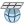
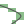
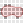
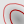

Docs for ‘QGIS testing’. Visit http://docs.qgis.org/2.14 for QGIS 2.14 docs and translations.
GDAL Tools Plugin¶
What is GDAL Tools?¶
The GDAL Tools plugin offers a GUI to the collection of tools in the Geospatial Data Abstraction Library, http://gdal.osgeo.org . These are raster management tools to query, re-project, warp and merge a wide variety of raster formats. Also included are tools to create a contour (vector) layer, or a shaded relief from a raster DEM, and to make a VRT (Virtual Raster Tile in XML format) from a collection of one or more raster files. These tools are available when the plugin is installed and activated.
The GDAL Library¶
The GDAL library consists of a set of command line programs, each with a large list of options. Users comfortable with running commands from a terminal may prefer the command line, with access to the full set of options. The GDAL Tools plugin offers an easy interface to the tools, exposing only the most popular options.
List of GDAL tools¶
Figure GDAL Tools 1:
The GDALTools menu list
Projections¶
|  Warp (Reproject) | This utility is an image mosaicing, reprojection and warping utility. The program can reproject to any supported projection, and can also apply GCPs stored with the image if the image is “raw” with control information. For more information, you can read on the GDAL website http://www.gdal.org/gdalwarp.html. |
 Assign projection Assign projection |
This tool allows you to assign projection to rasters that are already georeferenced but miss projection information. Also with its help, it is possible to alter existing projection definitions. Both single file and batch mode are supported. For more information, please visit the utility page at the GDAL site, http://www.gdal.org/gdalwarp.html. |
 Extract projection
Extract projection |
This utility helps you to extract projection information from an input file. If you want to extract projection information from a whole directory, you can use the batch mode. It creates both .prj and .wld files. |
{kind=link}
Conversion¶
|  Rasterize | This program burns vector geometries (points, lines and polygons) into the raster band(s) of a raster image. Vectors are read from OGR-supported vector formats. Note that the vector data must in the same coordinate system as the raster data; on the fly reprojection is not provided. For more information see http://www.gdal.org/gdal_rasterize.html. |
|  Polygonize | This utility creates vector polygons for all connected regions of pixels in the raster sharing a common pixel value. Each polygon is created with an attribute indicating the pixel value of that polygon. The utility will create the output vector datasource if it does not already exist, defaulting to ESRI shapefile format. See also http://www.gdal.org/gdal_polygonize.html. |
 Translate Translate |
This utility can be used to convert raster data between different formats, potentially performing some operations like subsetting, resampling, and rescaling pixels in the process. For more information you can read on http://www.gdal.org/gdal_translate.html. |
 RGB to PCT RGB to PCT |
This utility will compute an optimal pseudocolor table for a given RGB image using a median cut algorithm on a downsampled RGB histogram. Then it converts the image into a pseudocolored image using the color table. This conversion utilizes Floyd-Steinberg dithering (error diffusion) to maximize output image visual quality. The utility is also described at http://www.gdal.org/rgb2pct.html. |
| PCT to RGB |
This utility will convert a pseudocolor band on the input file into an output RGB file of the desired format. For more information, see http://www.gdal.org/pct2rgb.html. |
{kind=link}
{kind=link}
Extraction¶
|  Contour | This program generates a vector contour file from the input raster elevation model (DEM). On http://www.gdal.org/gdal_contour.html, you can find more information. |
 Clipper Clipper |
This utility allows you to clip (extract subset) rasters using selected extent or based on mask layer bounds. More information can be found at http://www.gdal.org/gdal_translate.html. |
{kind=link}
Analysis¶
 Sieve Sieve |
This utility removes raster polygons smaller than a provided threshold size (in pixels) and replaces them with the pixel value of the largest neighbor polygon. The result can be written back to the existing raster band, or copied into a new file. For more information, see http://www.gdal.org/gdal_sieve.html. |
| Near Black | This utility will scan an image and try to set all pixels that are nearly black (or nearly white) around the edge to exactly black (or white). This is often used to “fix up” lossy compressed aerial photos so that color pixels can be treated as transparent when mosaicing. See also http://www.gdal.org/nearblack.html. |
 Fill nodata Fill nodata |
This utility fills selected raster regions (usually nodata areas) by interpolation from valid pixels around the edges of the areas. On http://www.gdal.org/gdal_fillnodata.html, you can find more information. |
| Proximity | This utility generates a raster proximity map indicating the distance from the center of each pixel to the center of the nearest pixel identified as a target pixel. Target pixels are those in the source raster for which the raster pixel value is in the set of target pixel values. For more information see http://www.gdal.org/gdal_proximity.html. |
 Grid (Interpolation) Grid (Interpolation) |
This utility creates a regular grid (raster) from the scattered data read from the OGR datasource. Input data will be interpolated to fill grid nodes with values, and you can choose from various interpolation methods. The utility is also described on the GDAL website, http://www.gdal.org/gdal_grid.html. |
| DEM (Terrain models) | Tools to analyze and visualize DEMs. It can create a shaded relief, a slope, an aspect, a color relief, a Terrain Ruggedness Index, a Topographic Position Index and a roughness map from any GDAL-supported elevation raster. For more information, see http://www.gdal.org/gdaldem.html. |
{kind=link}
{kind=link}
{kind=link}
Miscellaneous¶
| Build Virtual Raster (Catalog) | This program builds a VRT (Virtual Dataset) that is a mosaic of the list of input GDAL datasets. See also http://www.gdal.org/gdalbuildvrt.html. |
 Merge Merge |
This utility will automatically mosaic a set of images. All the images must be in the same coordinate system and have a matching number of bands, but they may be overlapping, and at different resolutions. In areas of overlap, the last image will be copied over earlier ones. The utility is also described at http://www.gdal.org/gdal_merge.html. |
 Information Information |
This utility lists various information about a GDAL-supported raster dataset. On http://www.gdal.org/gdalinfo.html, you can find more information. |
 Build Overviews Build Overviews |
The gdaladdo utility can be used to build or rebuild overview images for most supported file formats with one of several downsampling algorithms. For more information, see http://www.gdal.org/gdaladdo.html. |
 Tile Index Tile Index |
This utility builds a shapefile with a record for each input raster file, an attribute containing the filename, and a polygon geometry outlining the raster. See also http://www.gdal.org/gdaltindex.html. |
{kind=link}
GDAL Tools Settings¶
Use this dialog to embed your GDAL variables.